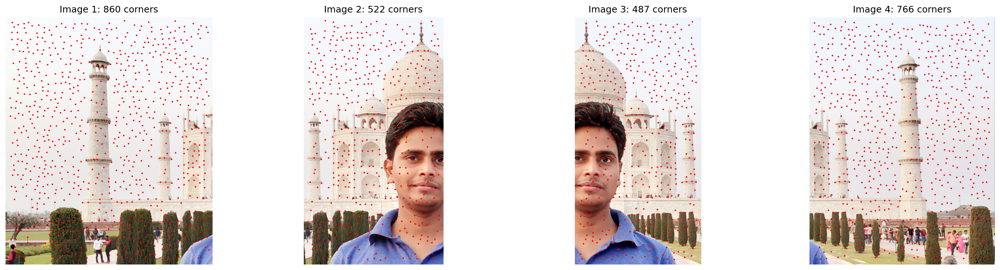
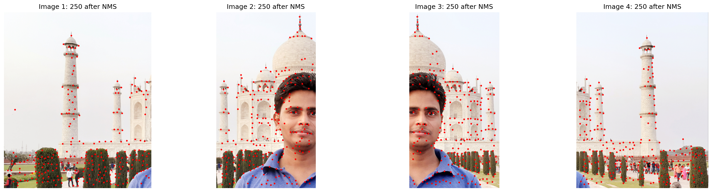
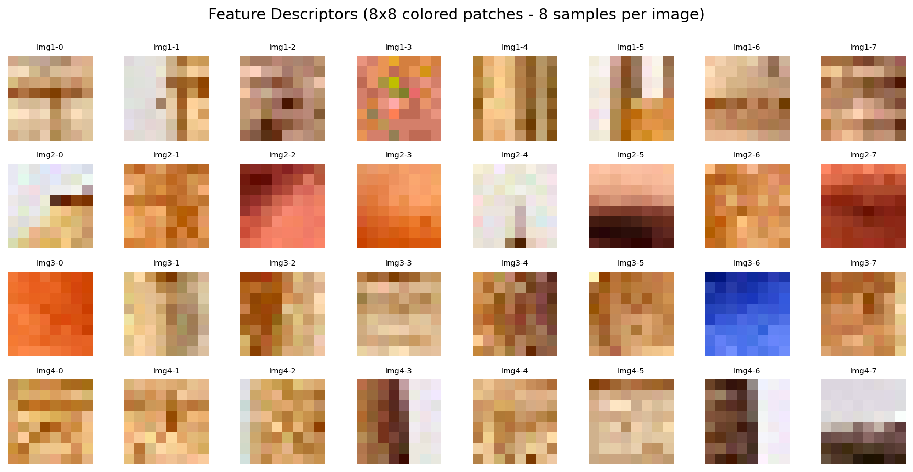
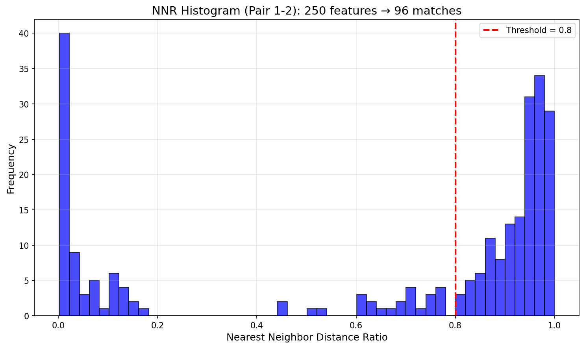
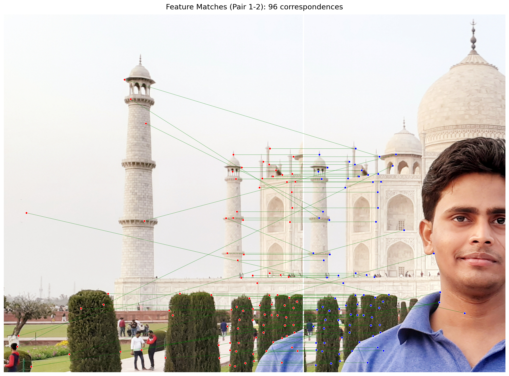
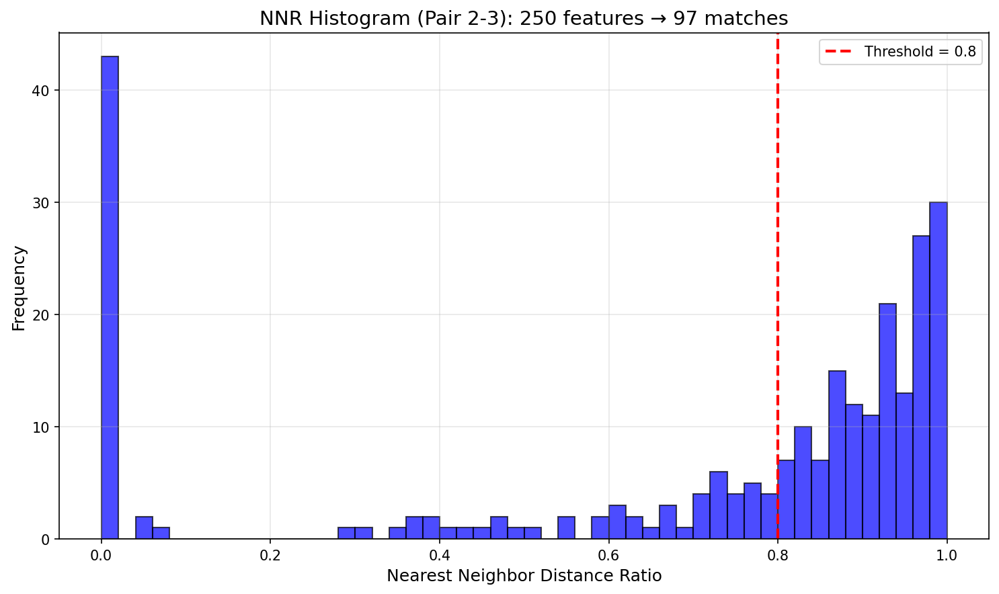
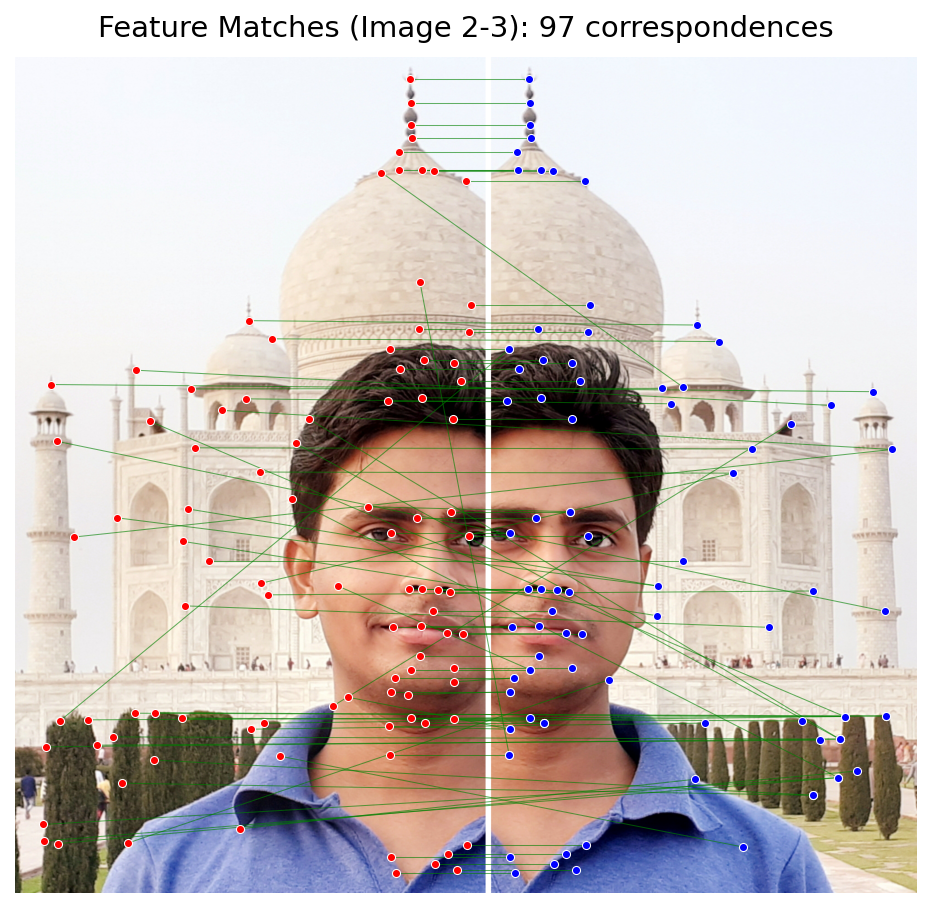
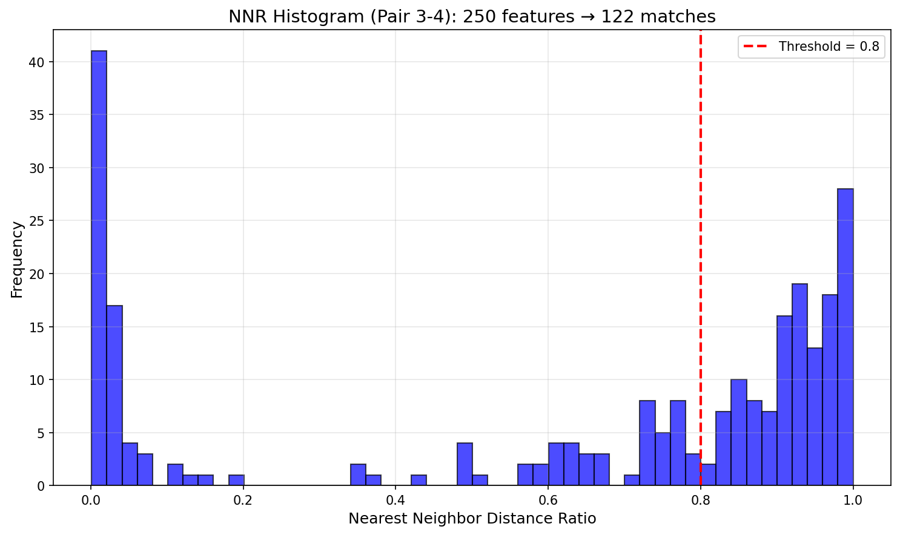
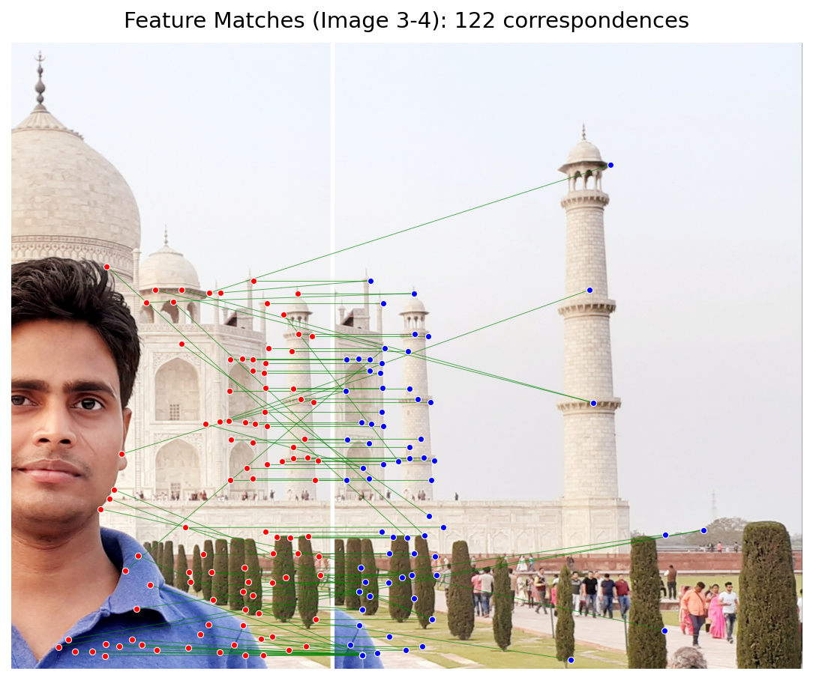
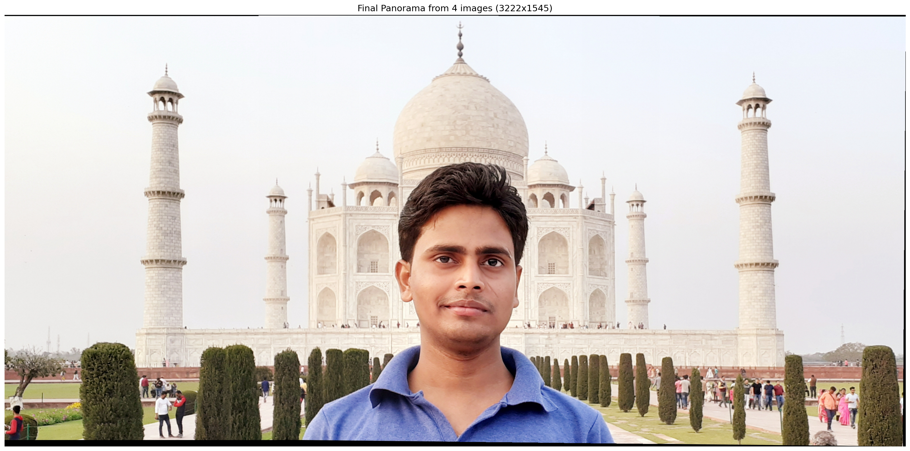

Computer Vision Project - Feature Detection & Matching Pipeline
This project implements a complete panoramic image stitching pipeline using computer vision techniques. The pipeline consists of five main stages:
Detect interest points in images using the Harris corner detection algorithm.
Filter detected corners to retain only the strongest local maxima.
Extract robust feature descriptors from detected corners for matching.
Match features between images using nearest neighbor distance ratio.
Estimate homography and create the final panorama with robust outlier rejection.
The first step detects interest points (corners) in each image using the Harris corner detector. Corners are ideal features because they are distinctive and can be reliably detected across different viewpoints.

Detected Harris corners across all input images
Non-maximal suppression filters the detected corners to keep only the strongest responses within local neighborhoods. This reduces the number of features while retaining the most distinctive ones, improving matching efficiency and accuracy.

Corners after Non-Maximal Suppression
For each detected corner, we extract a feature descriptor - a compact representation of the local image patch. These descriptors capture the appearance around each corner in a way that is robust to small changes in viewpoint and lighting.

Example feature descriptors (8×8 colored patches)
Features are matched between consecutive image pairs using the nearest neighbor distance ratio (NNR) test. This ratio compares the distance to the nearest neighbor versus the second nearest neighbor, helping to filter out ambiguous matches.

NNR Distribution showing feature match quality

Matched feature correspondences between images 1 and 2

NNR Distribution showing feature match quality

Matched feature correspondences between images 2 and 3

NNR Distribution showing feature match quality

Matched feature correspondences between images 3 and 4
Using RANSAC (Random Sample Consensus), we robustly estimate the homography transformation between images, filtering out outlier matches. The images are then warped and blended together to create the final panoramic result.

🎉 Final Panoramic Result